枚举服务
枚举是一类程序，它允许用户从一个网络中收集某一类的所有相关信息。本节将介绍DNS枚举和SNMP枚举技术。DNS枚举可以收集本地所有DNS服务和相关条目。DNS枚举可以帮助用户收集目标组织的关键信息，如用户名、计算机名和IP地址等，为了获取这些信息，用户可以使用DNSenum工具。要进行SNMP枚举，用户需要使用SnmpEnum工具。SnmpEnum是一个强大的SNMP枚举工具，它允许用户分析一个网络内SNMP信息传输。
DNS枚举工具DNSenum
DNSenum是一款非常强大的域名信息收集工具。它能够通过谷歌或者字典文件猜测可能存在的域名，并对一个网段进行反向查询。它不仅可以查询网站的主机地址信息、域名服务器和邮件交换记录，还可以在域名服务器上执行axfr请求，然后通过谷歌脚本得到扩展域名信息，提取子域名并查询，最后计算C类地址并执行whois查询，执行反向查询，把地址段写入文件。本小节将介绍使用DNSenum工具检查DNS枚举。在终端执行如下所示的命令：
1 | root@kali:~# dnsenum --enum benet.com |
输出的信息显示了DNS服务的详细信息。其中，包括主机地址、域名服务地址和邮件服务地址。如果幸运的话，还可以看到一个区域传输。
使用DNSenum工具检查DNS枚举时，可以使用dnsenum的一些附加选项，如下所示。
–threads [number]：设置用户同时运行多个进程数。
- -r：允许用户启用递归查询。
- -d：允许用户设置WHOIS请求之间时间延迟数（单位为秒）。
- -o：允许用户指定输出位置。
- -w：允许用户启用WHOIS请求。
DNS枚举工具fierce
fierce工具和DNSenum工具性质差不多，其fierce主要是对子域名进行扫描和收集信息的。使用fierce工具获取一个目标主机上所有IP地址和主机信息。执行命令如下所示：
1 | root@kali:~# fierce -dns baidu.com |
输出的信息显示了baidu.com下所有的子域。从倒数第2行，可以看到总共找到133个条目。执行以上命令后，输出的内容较多。但是由于篇幅的原因，部分内容使用省略号（……）取代。
用户也可以通过提供一个单词列表执行相同的操作，执行命令如下所示：
1 | root@kali:~# fierce -dns baidu.com -wordlist hosts.txt /tmp/output.txt |
SNMP枚举工具Snmpwalk
Snmpwalk是一个SNMP应用程序。它使用SNMP的GETNEXT请求，查询指定的所有OID（SNMP协议中的对象标识）树信息，并显示给用户。本小节将演示Snmpwalk工具的使用。
【实例4-1】使用Snmpwalk命令测试Windows主机。执行命令如下所示：
1 | root@kali:~# snmpwalk -c public 192.168.41.138 -v 2c |
以上输出的信息显示了Windows主机192.168.41.138上的所有信息。
用户也可以使用snmpwalk命令枚举安装的软件。执行命令如下所示：
1 | root@kali:~# snmpwalk -c public 192.168.41.138 -v 1 | grep ftp |
输出信息如下所示：
1 | iso.3.6.1.2.1.25.4.2.1.5.3604 = STRING: "-k ftpsvc" |
输出的信息表示192.168.41.138主机安装了ftp软件包。
使用Snmpwalk工具也可以枚举目标主机上打开的TCP端口。执行命令如下所示：
1 | root@kali:~# snmpwalk -c public 192.168.41.138 -v 1 | grep tcpConnState | cut -d "." -f6 | sort -nu |
输出信息显示了192.168.41.138主机打开的端口。如21、25、80和443，总共打开了4个端口号。
SNMP枚举工具Snmpcheck
Snmpcheck工具允许用户枚举SNMP设备的同时将结果以可读的方式输出。下面将演示该工具的使用。使用Snmpcheck工具通过SNMP协议获取192.168.41.138主机信息。执行命令如下所示：
1 | root@kali:~# snmpcheck -t 192.168.41.138 |
该命令输出信息较多，下面依次讲解每个部分。首先输出的是枚举运行信息。
1 | snmpcheck.pl v1.8 - SNMP enumerator |
（1）获取系统信息，如主机名、操作系统类型及架构。结果如下所示：
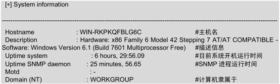
从输出的信息中可以看到该系统的主机名为WIN-RKPKQFBLG6C、x86架构和Windows系统等信息。
（2）获取设备信息，如设备ID号、类型和状态等。结果如下所示：
以上信息显示了该系统中所有设备相关信息，如打印设备、网络设备和处理器等。
（3）获取存储信息，如设备id、设备类型和文件系统类型等。结果如下所示：
该部分显示了系统中所有磁盘。由于篇幅的原因，这里只贴了A和C盘的存储信息。这里以C盘为例，介绍一下输出的信息，包括设备类型、文件系统类型、空间大小、已用空间大小和剩余空间大小等。
（4）获取用户账户信息。结果如下所示：
1 | [*] User accounts |
输出的信息显示了该系统中的有两个用户，分别是Administrator和Guest。
（5）获取进程信息，如进程ID、进程名和进程类型等。结果如下所示：
输出信息的第一行表示该系统中共有44个进程。由于篇幅的原因，这里只列出了前几个运行的进程。第二行指定了进程类型：1表示不知名；2表示操作系统；3表示设备驱动；4表示应用程序。第三行指定了进程的状态：1表示正在运行；2表示可以运行；3表示不能运行；4表示无效的。第四行的内容是以列的形式显示：第一列表示进程ID；第二列表示进程名；第三列表示进程状态；第四列表示进程路径。
（6）获取网络信息，如TTL值、TCP段和数据元。结果如下所示：
以上信息显示了该目标系统中网络的相关信息，如默认TTL值、收到TCP段、发送TCP段和重发TCP段等。
（7）获取网络接口信息，如接口状态、速率、IP地址和子网掩码等。结果如下所示：
以上信息中显示了loopback接口的相关信息。包括它的速率、IP地址、子网掩码和最大传输单元。
（8）获取路由信息，如目标地址、下一跳地址、子网掩码和路径长度值。结果如下所示：
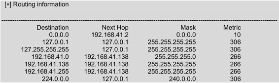
以上信息表示目标系统的一个路由表信息。该路由表包括目的地址、下一跳地址、子网掩码及路径长度值。
（9）获取网络服务信息，如分布式组件对象模型服务、DHCP客户端和DNS客户端等。结果如下所示：
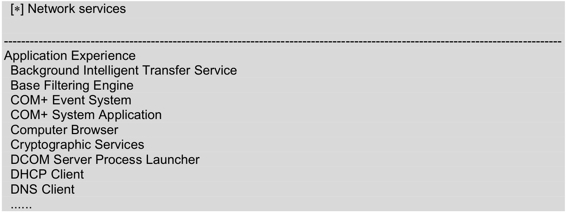以上信息显示了目标主机中所安装的服务。由于篇幅的原因，只列出了一少部分服务。
（10）获取监听的TCP端口，如监听的TCP端口号有135、495149513和139等。结果如下所示：
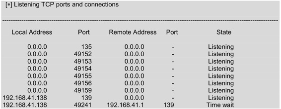以上信息表示两台主机建立TCP连接后的信息。包括本地地址、本机端口、远程主机地址、远程主机端口及连接状态。
（11）获取监听UDP端口信息，如监听的UDP端口有123、161、4500、500和5355等。结果如下所示：
以上信息表示目标主机中已开启的UDP端口号。
（12）获取软件组件信息，如Visual C++ 2008。显示结果如下所示：

以上信息表示该主机中安装了Visual C++ 2008类库。
（13）获取Web服务信息，如发送的字节数、文件数和当前匿名用户等。结果如下所示：
以上信息显示了关于Web服务的信息。最后显示了枚举主机192.168.41.138共用的时间。
SMTP枚举工具smtp-user-enum
smtp-user-enum是针对SMTP服务器的25端口，进行用户名枚举的工具，用以探测服务器已存在的邮箱账户。在SMTP服务上启动用户的SMTP枚举。执行命令如下所示：
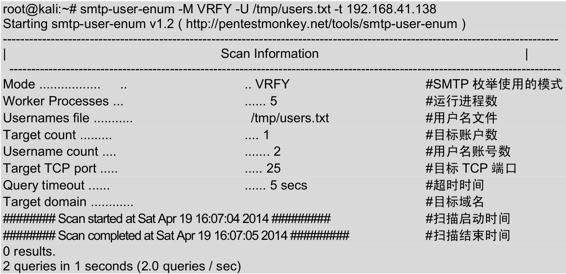输出的信息显示了扫描192.168.41.138主机的详细信息，包括模式、运行进程、用户名文件、用户数和TCP端口等。
测试网络范围
测试网络范围内的IP地址或域名也是渗透测试的一个重要部分。通过测试网络范围内的IP地址或域名，确定是否有人入侵自己的网络中并损害系统。不少单位选择仅对局部IP基础架构进行渗透测试，但从现在的安全形势来看，只有对整个IT基础架构进行测试才有意义。这是因为在通常情况下，黑客只要在一个领域找到漏洞，就可以利用这个漏洞攻击另外一个领域。在Kali中提供了DMitry和Scapy工具。其中，DMitry工具用来查询目标网络中IP地址或域名信息；Scapy工具用来扫描网络及嗅探数据包。本节将介绍使用DMitry和Scapy工具测试网络范围。
域名查询工具DMitry
DMitry工具是用来查询IP或域名WHOIS信息的。WHOIS是用来查询域名是否已经被注册及已经注册域名的详细信息的数据库（如域名所有人和域名注册商）。使用该工具可以查到域名的注册商和过期时间等。下面将使用DMitry工具收集rzchina.net域名的信息。执行命令如下所示：
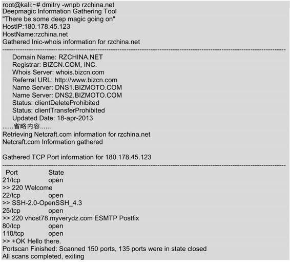输出的信息显示了rzchina.net域名的IP地址、WHOIS信息及开放的端口号等。执行以上命令后输出的信息很多，但是由于篇幅的原因，部分内容使用省略号（……）代替。
虽然使用DMitry工具可以查看到IP或域名信息，但还是不能判断出这个网络范围。因为一般的路由器和防火墙等并不支持IP地址范围的方式，所以工作中经常要把IP地址转换成子网掩码的格式、CIDR格式和思科反向子网掩码格式等。在Linux中，netmask工具可以在IP范围、子网掩码、CIDR和Cisco等格式中互相转换，并且提供了IP地址的点分十进制、十六进制、八进制和二进制之间的互相转换。使用netmask工具将域名rzchina.net转换成标准的子网掩码格式。执行命令如下所示：
1 | root@kali:~# netmask -s rzchina.net |
输出的信息显示了rzchina.net域名的IP地址和子网掩码值。
跟踪路由工具Scapy
Scapy是一款强大的交互式数据包处理工具、数据包生成器、网络扫描器、网络发现工具和包嗅探工具。它提供多种类别的交互式生成数据包或数据包集合、对数据包进行操作、发送数据包、包嗅探、应答和反馈匹配等功能。下面将介绍Scapy工具的使用。
使用Scapy实现多行并行跟踪路由功能。具体操作步骤如下所示。
（1）启动Scapy工具。执行命令如下所示。
1 | root@kali:~# scapy |
看到>>>提示符，表示scapy命令登录成功。
（2）使用sr()函数实现发送和接收数据包。执行命令如下所示：
1 | >>> ans,unans=sr(IP(dst="www.rzchina.net/30",ttl=(1,6))/TCP()) |
执行以上命令后，会自动与 www.rzchina.net 建立连接。执行几分钟后，使用Ctrl+C终止接收数据包。从输出的信息中可以看到收到70个数据包，得到19个响应包及保留了5个包。
（3）以表的形式查看数据包发送情况。执行命令如下所示：
1 | >>> ans.make_table(lambda(s,r):(s.dst,s.ttl,r.src)) |
执行以上命令后，输出如下所示的信息：
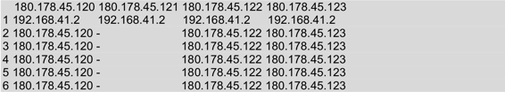输出的信息显示了该网络中的所有IP地址。
（4）使用scapy查看TCP路由跟踪信息。执行命令如下所示：
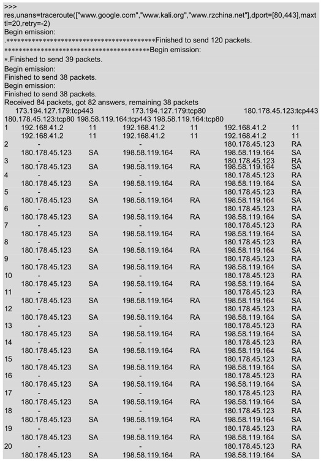输出的信息，显示了与 www.google.com、 www.kali.org、 www.rzchina.net 三个网站连接后所经过的地址。输出信息中的RA表示路由区，SA表示服务区。其中路由区是指当前系统中移动台当前的位置。RA（Routing Area）的标识符是RAI，RA是包含在LA内的。服务区是指移动台可获得服务的区域，即不同通信网用户无需知道移动台的实际位置，而可与之通信的区域。
（5）使用res.graph()函数以图的形式显示路由跟踪结果。执行命令如下所示：
1 | >>> res.graph() |
执行以上命令后，将显示如图4.1所示的界面。
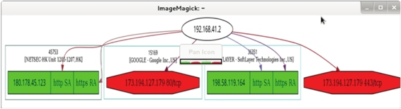图4.1 路由跟踪图
如果要想保存该图，执行如下所示的命令：
1 | >>> res.graph(target=">/tmp/graph.svg") |
执行以上命令后，图4.1中的信息将会保存到/tmp/graph.svg文件中。此时不会有任何信息输出。
（6）退出scapy程序，执行命令如下所示：
1 | >>> exit() |
执行以上命令后，scapy程序将退出。还可以按下Ctrl+D组合键退出scapy程序。
识别活跃的主机
尝试渗透测试之前，必须先识别在这个目标网络内活跃的主机。在一个目标网络内，最简单的方法将是执行ping命令。当然，它可能被一个主机拒绝，也可能被接收。本节将介绍使用Nmap工具识别活跃的主机。
网络映射器工具Nmap
Nmap是一个免费开放的网络扫描和嗅探工具包，也叫网络映射器（Network Mapper）。该工具其基本功能有三个，一是探测一组主机是否在线；其次是扫描主机端口，嗅探所提供的网络服务；三是可以推断主机所用的操作系统。通常，用户利用Nmap来进行网络系统安全的评估，而黑客则用于扫描网络。例如，通过向远程主机发送探测数据包，获取主机的响应，并根据主机的端口开放情况得到网络的安全状态。从中寻找存在漏洞的目标主机，从而实施下一步的攻击。
Nmap使用TCP/IP协议栈指纹准确地判断目标主机的操作系统类型。首先，Nmap通过对目标主机进行端口扫描，找出有哪些端口正在目标主机上监听。当侦测到目标主机上有多于一个开放的TCP端口、一个关闭的TCP端口和一个关闭的UDP端口时，Nmap的探测能力是最好的。Nmap工具的工作原理如表4-1所示。
表4-1 Nmap工作原理
| 测试 | 描述 |
|---|---|
| T1 | 发送TCP数据包（Flag=SYN）到开放的TCP端口上 |
| T2 | 发送一个空的TCP数据包到开放的TCP端口上 |
| T3 | 发送TCP数据包（Flag=SYN、URG、PSH和FIN）到开放的TCP端口上 |
| T4 | 发送TCP数据包（Flag=ACK）到开放的TCP端口上 |
| T5 | 发送TCP数据包（Flag=SYN）到关闭的TCP端口上 |
| T6 | 发送TCP数据包（Flag=ACK）到开放的TCP端口上 |
| T7 | 发送TCP数据包（Flag=URG、PSH和FIN）到关闭的TCP端口上 |
Nmap对目标主机进行一系列测试，如表4-1所示。利用得出的测试结果建立相应目标主机的Nmap指纹。最后，将此Nmap指纹与指纹库中指纹进行查找匹配，从而得出目标主机的操作系统类型。
Nmap主要扫描类型如表4-2所示。
表4-2 Nmap主要扫描类型
| Ping扫描 | 端口扫描 |
|---|---|
| TCP SYN扫描 | UDP扫描 |
| 操作系统识别 | 隐蔽扫描 |
使用Nmap识别活跃主机
上一小节介绍了Nmap工具概念及功能。现在就使用该工具，测试一个网络中活跃的主机。使用方法如下所示。
使用Nmap查看一个主机是否在线。执行命令如下所示：
1 | root@kali:~# nmap -sP 192.168.41.136 |
从输出的信息中可以看到192.168.41.136主机的域名、主机在线和MAC地址等。
用户也可以使用Nping（Nmap套具）查看，能够获取更多详细信息。执行命令如下 所示：
1 | root@kali:~# nping --echo-client "public" echo.nmap.org |
输出的信息显示了与echo.nmap.org网站连接时数据的发送情况，如发送数据包的时间、接收时间、TTL值和往返时间等。
用户也可以发送一些十六进制数据到指定的端口，如下所示：
1 | root@kali:~# nping -tcp -p 445 -data AF56A43D 192.168.41.136 |
输出的信息显示了192.168.41.234与目标系统192.168.41.136之间TCP传输过程。通过发送数据包到指定端口模拟出一些常见的网络层攻击，以验证目标系统对这些测试的防御情况。
查看打开的端口
对一个大范围的网络或活跃的主机进行渗透测试，必须要了解这些主机上所打开的端口号。在Kali Linux中默认提供了Nmap和Zenmap两个扫描端口工具。为了访问目标系统中打开的TCP和UDP端口，本节将介绍Nmap和Zenmap工具的使用。
TCP端口扫描工具Nmap
使用Nmap工具查看目标主机192.168.41.136上开放的端口号。执行命令如下所示：
1 | root@kali:~# nmap 192.168.41.136 |
输出的信息显示了主机192.168.41.136上开放的所有端口，如22、53、80和111等。
- 指定扫描端口范围
如果目标主机上打开的端口较多时，用户查看起来可能有点困难。这时候用户可以使用Nmap指定扫描的端口范围，如指定扫描端口号在1～1000之间的端口号，执行命令如下所示：
1 | root@kali:~# nmap -p 1-1000 192.168.41.136 |
输出的信息显示了主机192.168.41.136上端口在1～1000之间所开放的端口号。
2.扫描特定端口
Nmap工具还可以指定一个特定端口号来扫描。
【实例4-2】使用Nmap工具指定扫描在192.168.41.* 网段内所有开启TCP端口22的主机。执行命令如下所示：
1 | root@kali:~# nmap -p 22 192.168.41.* |
输出的结果显示了192.168.41.* 网段内所有开启22端口的主机信息。从输出的信息中可以看到，总共有五台主机上打开了22号端口。
使用Nmap工具还可以指定扫描端口22结果的输出格式。执行命令如下所示：
1 | root@kali:~# nmap -p 22 192.168.41.* -oG /tmp/nmap-targethost-tcp445.txt |
执行以上命令后输出的信息与第三步中输出的结果类似，这里就不再列举。但是执行该命令后，Nmap会将输出的信息保存到/tmp/ nmap-targethost-tcp445.txt文件中。
图形化TCP端口扫描工具Zenmap
Zenmap是Nmap官方推出的一款基于Nmap的安全扫描图形用户界面。它的设计目标是快速地扫描大型网络，当然也可以使用它扫描单个主机。下面将介绍Zenmap工具的使用。
启动Zenmap工具。在Kali图形界面依次选择“应用程序” |Kali Linux| “信息收集” | “DNS分析” | Zenmap命令，将打开如图4.2所示的界面。
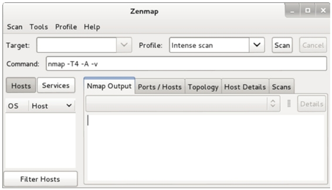图4.2 Zenmap起始界面
在该界面Target文本框中输入目标主机地址，在Profile文本框中选择扫描类型。设置完后，单击Scan按钮，扫描结果如图4.3所示。
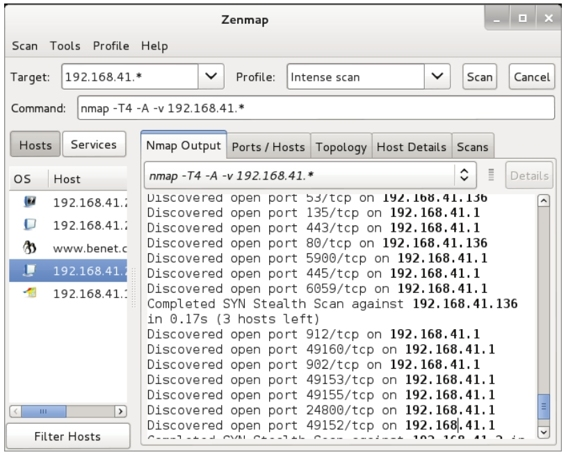图4.3 扫描界面
该界面显示了扫描192.168.41.* 网段内所有主机启动的所有端口信息。在左侧栏中可以切换以主机或服务的形式分别显示详细扫描结果。在右侧栏中，可以分别查看Namp输出信息、端口/主机、拓扑结构、主机详细信息和扫描信息等。
系统指纹识别
现在一些便携式计算机操作系统使用指纹识别来验证密码进行登录。指纹识别是识别系统的一个典型模式，包括指纹图像获取、处理、特征提取和对等模块。如果要做渗透测试，需要了解要渗透测试的操作系统的类型才可以。本节将介绍使用Nmap工具测试正在运行的主机的操作系统。
使用Nmap工具识别系统指纹信息
使用Nmap命令的-O选项启用操作系统测试功能。执行命令如下所示：
1 | root@kali:~# nmap -O 192.168.41.136 |
输出的信息显示了主机192.168.41.136的指纹信息，包括目标主机打开的端口、MAC地址、操作系统类型和内核版本等。
指纹识别工具p0f
p0f是一款百分之百的被动指纹识别工具。该工具通过分析目标主机发出的数据包，对主机上的操作系统进行鉴别，即使是在系统上装有性能良好的防火墙也没有问题。p0f主要识别的信息如下：
- 操作系统类型；
- 端口；
- 是否运行于防火墙之后；
- 是否运行于NAT模式；
- 是否运行于负载均衡模式；
- 远程系统已启动时间；
- 远程系统的DSL和ISP信息等。
使用p0f分析Wireshark捕获的一个文件。执行命令如下所示：
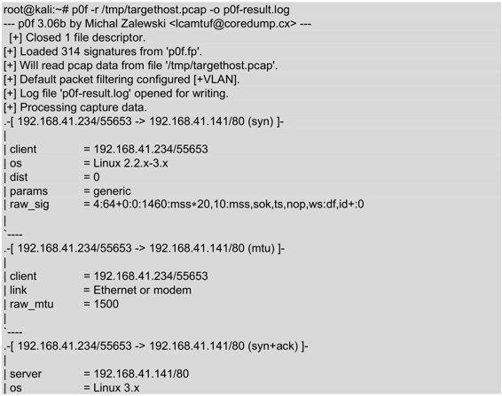 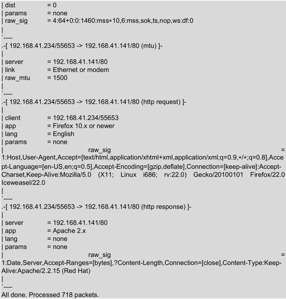输出的信息是p0f分析targethost.pcap包的一个结果。该信息中显示了客户端与服务器的详细信息，包括操作系统类型、地址、以太网模式、运行的服务器和端口号等。
注意：p0f命令的v2和v3版中所使用的选项有很大的差别。例如，在p0fv2版本中，指定文件使用的选项是-s，但是在v3版本中是-r。本书中使用的p0f版本是v3。
服务的指纹识别
为了确保有一个成功的渗透测试，必须需要知道目标系统中服务的指纹信息。服务指纹信息包括服务端口、服务名和版本等。在Kali中，可以使用Nmap和Amap工具识别指纹信息。本节将介绍使用Nmap和Amap工具的使用。
使用Nmap工具识别服务指纹信息
使用Nmap工具查看192.168.41.136服务上正在运行的端口。执行命令如下所示：
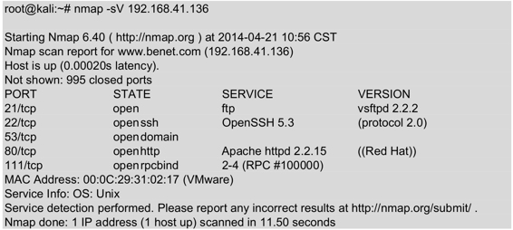从输出的信息中可以查看到目标服务器上运行的端口号有21、22、53、80和111。同时，还获取各个端口对应的服务及版本信息。
服务枚举工具Amap
Amap是一个服务枚举工具。使用该工具能识别正运行在一个指定端口或一个范围端口上的应用程序。下面使用Amap工具在指定的50～100端口范围内，测试目标主机192.168.41.136上正在运行的应用程序。执行命令如下所示：
1 | root@kali:~# amap -bq 192.168.41.136 50-100 |
输出的信息显示了192.168.41.136主机在50～100端口范围内正在运行的端口。从输出结果的第二段内容中可以了解到主机192.168.41.136使用的是Red Hat操作系统，并且正在运行着版本为2.2.15的Apache服务器，其开放的端口是80。从倒数第二行信息中可以看到该主机还运行了DNS服务器，其开放的端口是53。
其他信息收集手段
面介绍了使用不同的工具以操作步骤的形式进行了信息收集。在Kali中还可以使用一些常规的或非常规方法来收集信息，如使用Recon-NG框架、Netdiscover工具和Shodan工具等。本节将介绍使用这些方法，实现信息收集。
Recon-NG框架
Recon-NG是由Python编写的一个开源的Web侦查（信息收集）框架。Recon-NG框架是一个强大的工具，使用它可以自动的收集信息和网络侦查。下面将介绍使用Recon-NG侦查工具。
启动Recon-NG框架。执行命令如下所示：
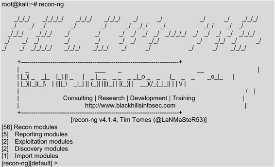以上输出信息显示了Recon-NG框架的基本信息。例如，在Recon-NG框架下，包括56个侦查模块、5个报告模块、2个渗透攻击模块、2个发现模块和1个导入模块。看到[recon-ng][default]>提示符，表示成功登录Recon-NG框架。现在，就可以在[recon-ng][default] >提示符后面执行各种操作命令了。
首次使用Recon-NG框架之前，可以使用help命令查看所有可执行的命令。如下所示：
1 | [recon-ng][default] > help |
以上输出信息显示了在Recon-NG框架中可运行的命令。该框架和Metasploit框架类似，同样也支持很多模块。此时，可以使用show modules命令查看所有有效的模块列表。执行命令如下所示：
1 | [recon-ng][default] > show modules |
从输出的信息中，可以看到显示了五部分。每部分包括的模块数，在启动Recon-NG框架后可以看到。用户可以使用不同的模块进行各种的信息收集。下面以例子的形式介绍使用Recon-NG中的模块进行信息收集。
【实例4-3】使用recon/domains-hosts/baidu_site模块，枚举baidu网站的子域。具体操作步骤如下所示。
（1）使用recon/domains-hosts/baidu_site模块。执行命令如下所示：
1 | [recon-ng][default] > use recon/domains-hosts/baidu_site |
（2）查看该模块下可配置选项参数。执行命令如下所示：
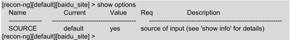从输出的信息中，可以看到有一个选项需要配置。
（3）配置SOURCE选项参数。执行命令如下所示：
1 | [recon-ng][default][baidu_site] > set SOURCE baidu.com |
从输出的信息中，可以看到SOURCE选项参数已经设置为baidu.com。
（4）启动信息收集。执行命令如下所示：
1 | [recon-ng][default][baidu_site] > run |
从输出的信息中，可以看到找到了9个子域。枚举到的所有数据将被连接到Recon-NG放置的数据库中。这时候，用户可以创建一个报告查看被连接的数据。
【实例4-4】查看获取的数据。具体操作步骤如下所示。
（1）选择reporting/csv模块，执行命令如下所示。
1 | [recon-ng][default] > use reporting/csv |
（2）生成报告。执行命令如下所示：
1 | [recon-ng][default][csv] > run |
从输出的信息中可以看到，枚举到的9个记录已被添加到/root/.recon-ng /workspaces/default/results.csv文件中。打开该文件，如图4.4所示。
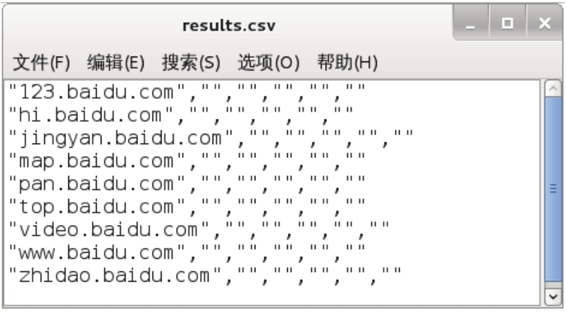图4.4 results.csv文件
（3）从该界面可以看到，枚举到的所有子域。
用户也可以使用Dmitry命令，查询关于网站的信息。下面将介绍Dmitry命令的使用。
查看Dmitry命令的帮助信息。执行命令如下所示：
1 | root@kali:~# dmitry -h |
以上信息显示了dmitry命令的语法格式和所有可用参数。下面使用dmitry命令的-s选项，查询合理的子域。执行命令如下所示：
1 | root@kali:~# dmitry -s google.com |
从输出的信息中，可以看到搜索到了一个子域。该子域名为 www.google.com， IP地址为173.194.127.51。该命令默认是从google.com网站搜索，如果不能连接google.com网站的话，执行以上命令将会出现Unable to connect: Socket Connect Error错误信息。
ARP侦查工具Netdiscover
Netdiscover是一个主动/被动的ARP侦查工具。该工具在不使用DHCP的无线网络上非常有用。使用Netdiscover工具可以在网络上扫描IP地址，检查在线主机或搜索为它们发送的ARP请求。下面将介绍Netdiscover工具的使用方法。
Netdiscover命令的语法格式如下所示：
1 | netdiscover [-i device] [-r range | -l file | -p] [-s time] [-n node] [-c count] [-f] [-d] [-S] [-P] [-C] |
以上语法中，各选项参数含义如下所示。
- -i device：指定网络设备接口。
- -r range：指定扫描网络范围。
- -l file：指定扫描范围列表文件。
- -p：使用被动模式，不发送任何数据。
- -s time：每个ARP请求之间的睡眠时间。
- -n node：使用八字节的形式扫描。
- -c count：发送ARP请求的时间次数。
- -f：使用主动模式。
- -d：忽略配置文件。
- -S：启用每个ARP请求之间抑制的睡眠时间。
- -P：打印结果。
- -L：将捕获信息输出，并继续进行扫描。
【实例4-5】使用Netdiscover工具攻击扫描局域网中所有的主机。执行命令如下所示：
1 | root@kali:~# netdiscover |
执行以上命令后，将显示如下所示的信息：
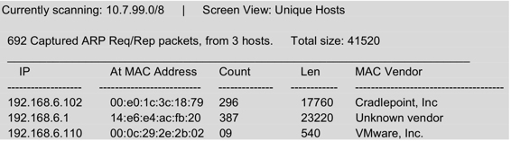从输出的信息中，可以看到扫描到了三台主机。其IP地址分别为192.168.6.102、192.168.6.1和192.168.6.110。
搜索引擎工具Shodan
Shodan是互联网上最强大的一个搜索引擎工具。该工具不是在网上搜索网址，而是直接搜索服务器。Shodan可以说是一款“黑暗”谷歌，一直不停的在寻找着所有和互联网连接的服务器、摄像头、打印机和路由器等。每个月都会在大约5亿个服务器上日夜不停的搜集信息。下面将介绍Shodan工具的使用。
Shodan的官网网址是 www.shodanhq.com。 打开该网址界面，如图4.5所示。
图4.5 Shodan官网
如果要搜索一些东西时，在Shodan对应的文本框中输入搜索的内容。然后，单击Search按钮开始搜索。例如，用户想要搜索思科路由器，则在搜索框中输入Cisco，并单击Search按钮。搜索到结果后，显示界面如图4.6所示。
图4.6 搜索结果
从该界面可以看到搜索到全球三百多万的Cisco路由器。在该界面用户可以单击任何IP地址，直接找到该设备。
在使用Shodan搜索引擎中，可以使用过滤器通过缩小搜索范围快速的查询需要的东西。如查找运行在美国IIS 8.0的所有IIS服务，可以使用以下搜索方法，如图4.7所示。
图4.7 搜索的IIS服务
在该界面显示了搜索到的一个IIS 8.0服务器。从搜索到的设备中，可以看到关于该服务器的标题信息、所在的国家、主机名和文本信息。
在Shodan搜索时，需要注意一些过滤器命令的语法。常见的几种情况如下所示。
- City和Country命令
使用City和Country命令可以缩小搜索的地理位置。如下所示。
- country:US表示从美国进行搜索。
- city:Memphis表示从孟斐斯城市搜索。
City和Country命令也可以结合使用。如下所示。 - country:US city:Memphis。
- HOSTNAME命令
HOSTNAME命令通过指定主机名来扫描整个域名。
- hostname:google表示搜索google主机。
- NET命令
使用NET命令扫描单个IP或一个网络范围。如下所示。
- net:192.168.1.10：扫描主机192.168.1.10。
- net:192.168.1.0/24：扫描192.168.1.0/24网络内所有主机。
- Title命令
使用Title命令可以搜索项目。如下所示。
- title:“Server Room”表示搜索服务器机房信息。
- 关键字搜索
Shodan使用一个关键字搜索是最受欢迎的方式。如果知道目标系统使用的服务器类型或嵌入式服务器名，来搜索一个Web页面是很容易的。如下所示。
- apache/2.2.8 200 ok：表示搜索所有Apache服务正在运行的2.2.8版本，并且仅搜索打开的站点。
- apache/2.2.8 -401 -302：表示跳过显示401的非法页或302删除页。
6．组合搜索
- IIS/7.0 hostname:YourCompany.com city:Boston表示搜索在波士顿所有正在运行IIS/7.0的Microsoft服务器。
- IIS/5.0 hostname:YourCompany.com country:FR表示搜索在法国所有运行IIS/5.0的系统。
- Title:camera hostname:YourCompany.com表示在某台主机中标题为camera的信息。
- geo:33.5,36.3 os:Linux表示使用坐标轴（经度33.5，纬度36.3）的形式搜索Linux操作系统。
7．其他搜索术语
- Port：通过端口号搜索。
- OS：通过操作系统搜索。
- After或Before：使用时间搜索服务。
【实例4-6】使用Metasploit实现Shodan搜索。具体操作步骤如下所示。
（1）在Shodanhq.com网站注册一个免费的账户。
（2）从http://www.shodanhq.com/api_doc网站获取API key，获取界面如图4.8所示。获取API key，为了在后面使用。
图4.8 获取的API key
（3）启动PostgreSQL服务。执行命令如下所示：
1 | root@kali:~# service postgresql start |
（4）启动Metasploit服务。执行命令如下所示：
1 | root@kali:~# service metasploit start |
（5）启动MSF终端，执行命令如下所示：
1 | root@kali:~# msfconsole |
（6）选择auxiliary/gather/shodan_search模块，并查看该模块下可配置的选项参数。执行命令如下所示：
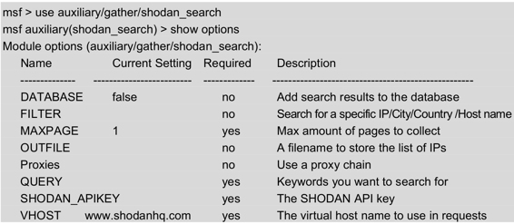从以上输出信息中，可以看到有四个必须配置选项参数。其中有两个选项已经配置，QUERY和SHODAN_APIKEY还没有配置。
（7）配置QUERY和SHODAN_APIKEY选项参数。执行命令如下所示：
1 | msf auxiliary(shodan_search) > set SHODAN_APIKEY duV9vwgCmo0oDfWqfWafax8sj0ZUa5BU |
从输出的信息中，可以看到QUERY和SHODAN_APIKEY选项成功配置。
（8）启动搜索引擎。执行命令如下所示：
以上输出的信息显示了匹配iomega关键字的所有信息。搜索的结果显示了四列，分别表示IP地址、城市、国家和主机名。如果想要使用过滤关键字或得到更多的响应页，用户必须要购买一个收费的APIkey。
使用Maltego收集信息
Maltego是一个开源的漏洞评估工具，它主要用于论证一个网络内单点故障的复杂性和严重性。该工具能够聚集来自内部和外部资源的信息，并且提供一个清晰的漏洞分析界面。本节将使用Kali Linux操作系统中的Maltego，演示该工具如何帮助用户收集信息。
准备工作
在使用Maltego工具之前，需要到 https://www.paterva.com/web6/community/maltego/ 网站注册一个账号。注册界面如图4.9所示。
图4.9 注册账号
在该界面填写正确信息后，单击Register按钮，将完成注册。此时，注册账号时使用的邮箱将会收到一份邮件，登录邮箱，将用户账户激活。
使用Maltego工具
使用Maltego工具收集信息。具体操作步骤如下所示：
（1）启动Maltego工具。依次选择“应用程序”|Kali Linux|“信息收集”|“情报分析”|maltego命令，将显示如图4.10所示的界面。
图4.10 Maltego欢迎界面
（2）在该界面单击Next按钮，将显示如图4.11所示的界面。
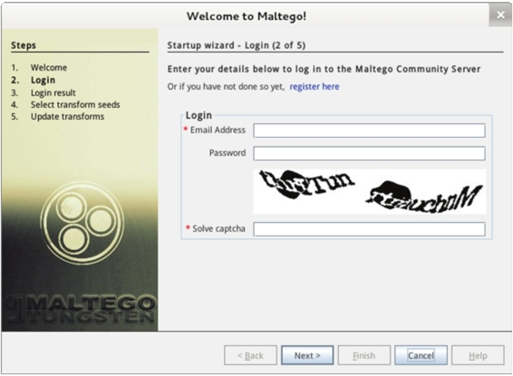图4.11 登录界面
（3）在该界面输入前面注册用户时的邮箱地址和密码及验证码。然后单击Next按钮，将显示如图4.12所示的界面。
图4.12 登录成功
（4）该界面显示了登录结果信息。此时，单击Next按钮，将显示如图4.13所示的 界面。
图4.13 选择转换节点
（5）在该界面发现转换节点信息的来源。然后单击Next按钮，将显示如图4.14所示的界面。
图4.14 更新转换节点
（6）在该界面选择怎样使用Maltego，这里选择默认的选项Run a machine(NEW!!)。然后单击Finish按钮，将显示如图4.15所示的界面。
图4.15 选择主机
（7）该界面用来选择运行的主机，这里选择Company Stalker（组织网）选项。然后单击Next按钮，将显示如图4.16所示的界面。
图4.16 指定目标
（8）在该界面输入一个域名。然后单击Finish按钮，将显示如图4.17所示的界面。
图4.17 Results Limited
（9）该界面提示信息在paterva.com主机中仅限于12个实体。在该界面选择Don’t show again，然后单击OK按钮，将显示如图4.18所示的界面。
图4.18 运行的主机
（10）该界面显示了刚创建的paterva.com。如果没显示，在右侧栏Palette下选择Domain，然后用鼠标拖拽域名到Graph中。在该界面选择paterva.com域名，将会在右侧栏显示paterva.com域名的相关信息，如图4.19所示。该域名的信息可以修改，如修改域名。单击Property View框中的Domain Name，将鼠标选中当前的域名就可以修改。例如，将这里的域名paterva.com修改为targethost.com，将显示如图4.20所示的界面。
图4.19 paterva.com信息
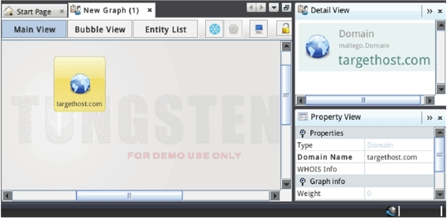图4.20 targethost.com信息
（11）一旦目标主机设置成功后，用户就可以启动收集信息。首先右击创建的域实体，并选择Run Transform将显示有效的选项，如图4.21所示。
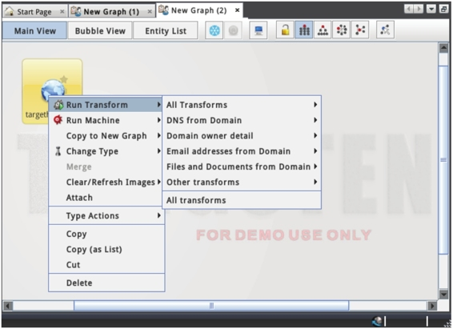图4.21 启动收集信息
（12）在该界面可以选择寻找DNS名，执行WHOIS和获取电子邮件地址等等。或者选择运行所有转换，显示结果如图4.22所示。
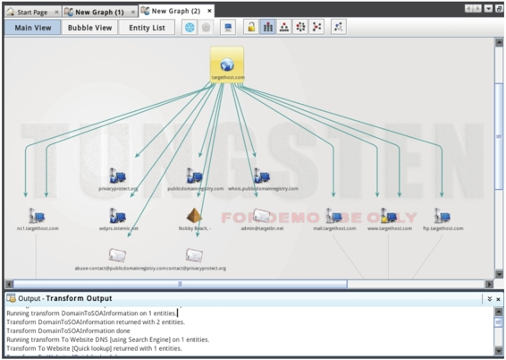图4.22 信息收集
（13）从该界面可以看到获取了很多关于targethost.com的信息。用户也可以使用同样的方法，单击子节点获取想要查看的信息。
用户可以使用Maltego映射网络。Maltego是由Paterva创建的一个开源工具，用于信息收集和取证。前面分别介绍了Maltego的安装向导，通过拖曳它到图表中并使用该域实体。现在将学习允许Maltego去绘制自己的图表，并检查各种来源完成工作。因为用户可以利用这一点自动化快速地在目标网络内收集信息，如电子邮件地址、服务器和执行WHOIS查询等。
用户可以通过Transform Manager窗口中All Transforms标签，启动和禁用转换节点，如图4.23所示。
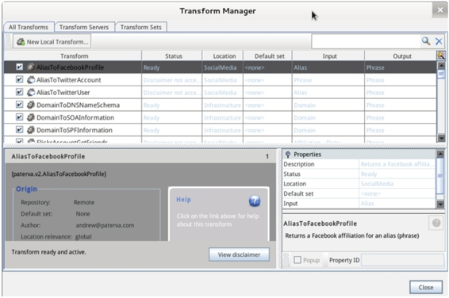图4.23 Transform Manager界面
在该界面列出了所有转换节点。为了能够使用几个转换节点，必须先接受disclaimer。接受disclaimer的方法，在该界面选择转换节点后，单击最底部的View disclaimer按钮，将显示如图4.24所示的界面。
图4.24 Transform Disclaimer
在该界面将I accept the above disclaimer复选框勾上，然后单击Close按钮就可以了。
绘制网络结构图
CaseFile工具用来绘制网络结构图。使用该工具能快速添加和连接，并能以图形界面形式灵活的构建网络结构图。本节将介绍Maltego CaseFile的使用。
在使用CaseFile工具之前，需要修改系统使用的Java和Javac版本。因为CaseFile工具是用Java开发的，而且该工具必须运行在Java1.7.0版本上。但是在Kali Linux中，安装了JDK6和JDK7，而CaseFile默认使用的是JDK6。此时运行CaseFile工具后，图形界面无法显示菜单栏。所以就需要改变JDK版本，改变JDK版本的方法如下所示。
使用update-alternatives命令修改java命令版本。执行命令如下所示：
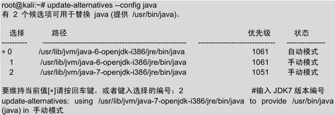
从输出的信息中可以看到已经修改为JDK7版本，而且是手动模式。或者使用java命令查看当前的版本信息，执行命令如下所示：
1 | root@kali:~# java -version |
从以上结果中可以确定当前系统的java命令版本是1.7.0。
使用update-alternatives命令修改javac命令版本。执行命令如下所示：
从输出的信息中可以看到已经修改为JDK7版本，而且是手动模式。这时，再使用javac命令查看当前的版本信息，执行命令如下所示：
1 | oot@kali:~# javac -version |
从以上结果中可以确定当前系统的javac命令版本是1.7.0。
【实例4-7】使用CaseFile工具绘制一个网络结构图。具体操作步骤如下所示。
（1）启动CaseFile。依次选择“应用程序”|Kali Linux|“信息收集”|“情报分析”|casefile命令，将显示如图4.25所示的界面。
图4.25 欢迎界面
（2）该界面是一个欢迎信息，这里单击Next按钮，将显示如图4.26所示的界面。
图4.26 设置向导
（3）该界面选择将要进行什么操作。这里选择Open a blank graph and let me play around，然后单击Finish按钮，将显示如图4.27所示的界面。
图4.27 初始界面
（4）从该界面可以看到没有任何信息，因为默认没有选择任何设备。该工具和Maltego工具一样，需要从组件Palette中拖曳每个实体到图表中。本例中选择拖曳域实体，并且改变域属性，如图4.28所示。
图4.28 域名实体
（5）在该界面可以为域添加一个注释。将鼠标指到域实体上，然后双击注释图标，将显示如图4.29所示的界面。
图4.29 添加注释
（6）在该界面可以看到添加的注释信息，该信息可以修改。将鼠标点到注释信息的位置即可修改。在该界面还可以拖曳其他实体，这里拖另一个实体域名，用来记录来自目标主机的DNS信息，如图4.30所示。
图4.30 域名实体
（7）在该界面可以将这两个实体连接起来。只需要拖一个线，从一个实体到另一个实体即可，如图4.31所示。
图4.31 连接两个实体
（8）连接两个实体后，将显示如图4.32所示的界面。
图4.32 线条属性界面
（9）该界面用来设置线条的属性。可以修改线的粗细、格式和颜色等。
（10）重复以上第（5）、（6）、（7）和（8）步骤添加更多信息，来绘制网络图。下面绘制一个简单的组织网络结构图，如图4.33所示。
图4.33 组织网络
（11）从该界面可以看到一个组织网络结构图。此时用户可以保存该图，如果需要的时候，以后可以打开并编辑该图。如果需要重新打开一个Graph窗口，可以单击左上角的或者图标，如图4.34所示。
图4.34 新建Graph
在该界面单击New按钮，将会创建一个新的Graph，此时会命名为New Graph(2)，如图4.35所示。
图4.35 新建的New Graph(2)
引用与 https://wizardforcel.gitbooks.io/daxueba-kali-linux-tutorial/content/17.html